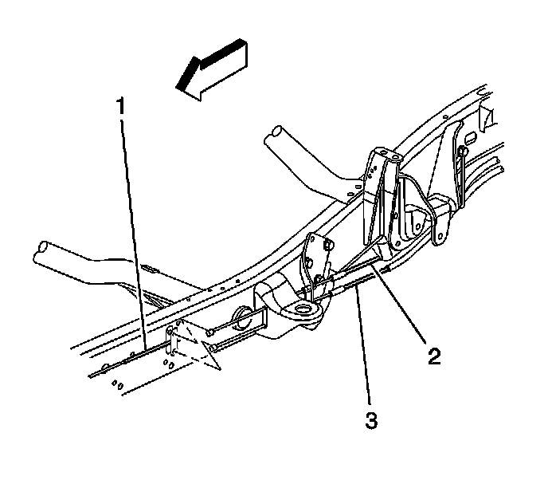
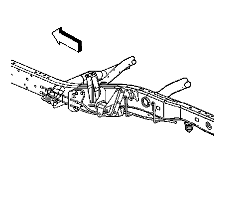
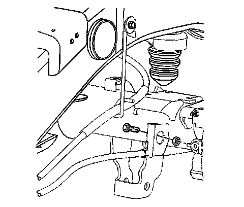
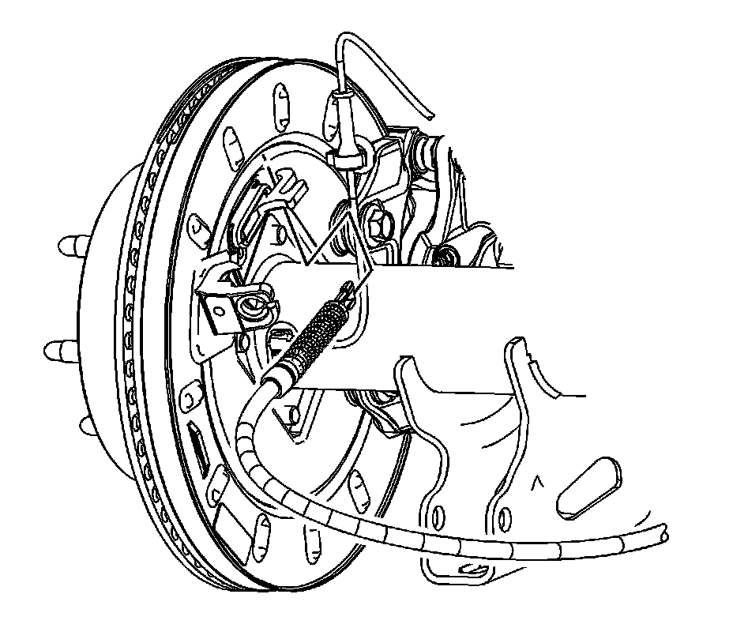

Park Brake Rear Cable Replacement - Left Side
Parking Brake Rear Cable Replacement - Left Side
Removal Procedure

1. Ensure the park brake is released.
2. Disable the park brake cable automatic adjuster. Refer to Parking Brake Cable Adjuster Disabling.
3. Raise and support the vehicle. Refer to Lifting and Jacking the Vehicle.
4. Disconnect the left rear park brake cable (3) from the equalizer on the intermediate park brake cable (1).

5. Remove the park brake cable from the mounting bracket by depressing the locking tabs.

6. Remove the nut and bolt securing the park brake cable to the rear axle housing bracket (2500 series).
7. Release the park brake cable from the park brake cable guides on the vehicle frame.

8. Remove the park brake cable from the actuator lever.
9. Remove the park brake cable from the backing plate by depressing the locking tabs.
10. Remove the park brake cable.
Installation Procedure
1. Install the cable taking care to correctly route the cable through the guides and the body mounts.
2. Install the cable to the backing plate by pressing the cable into place until the tabs lock into place.
3. Install the cable to the actuator lever.
Notice: Refer to Fastener Notice.
4. Position the park brake cable to the rear axle bracket and install the bolt and nut (2500 series).
Tighten the bolt and nut to 22 N.m (16 lb ft).
5. Position the park brake cable to the cable guides on the vehicle frame.
6. Install the cable to the mounting bracket until the tabs lock into place.
7. Connect the left rear park brake cable (3) to the intermediate park brake cable (1) equalizer.
8. Lower the vehicle. Refer to Lifting and Jacking the Vehicle.
9. Enable the park brake cable automatic adjuster. Refer to Parking Brake Cable Adjuster Enabling.
10. Adjust the park brake. Refer to Park Brake Adjustment.